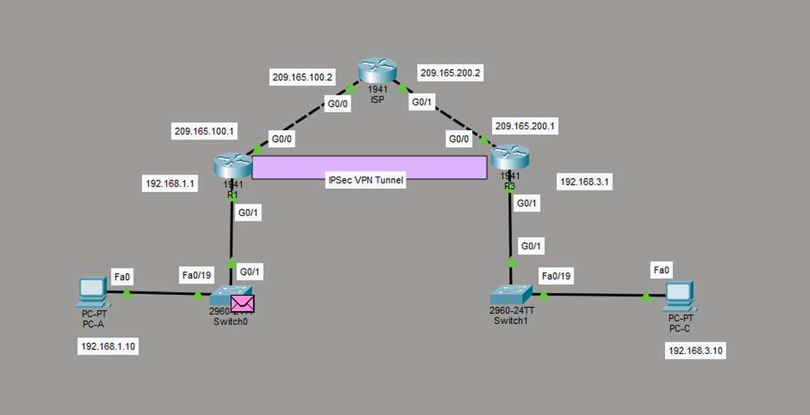
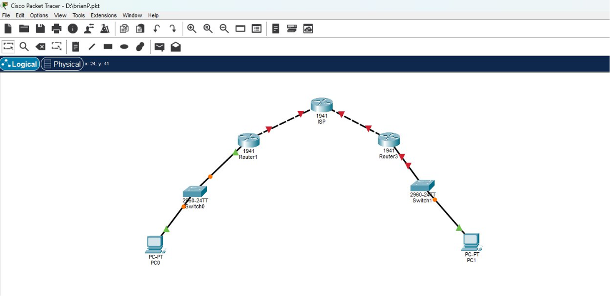
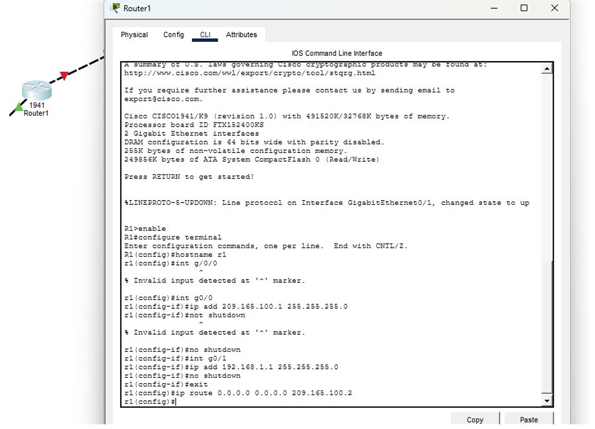
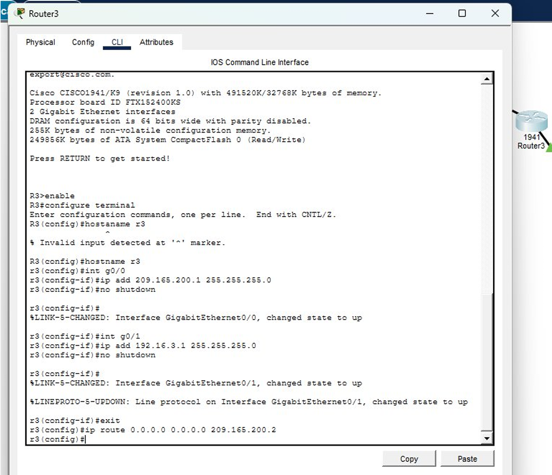
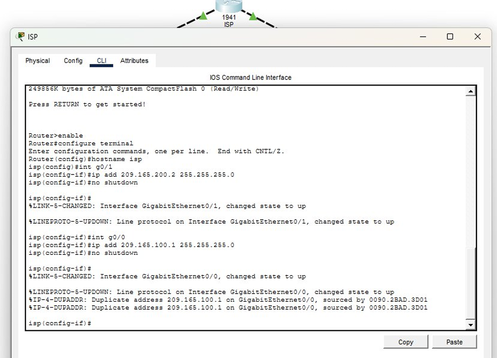
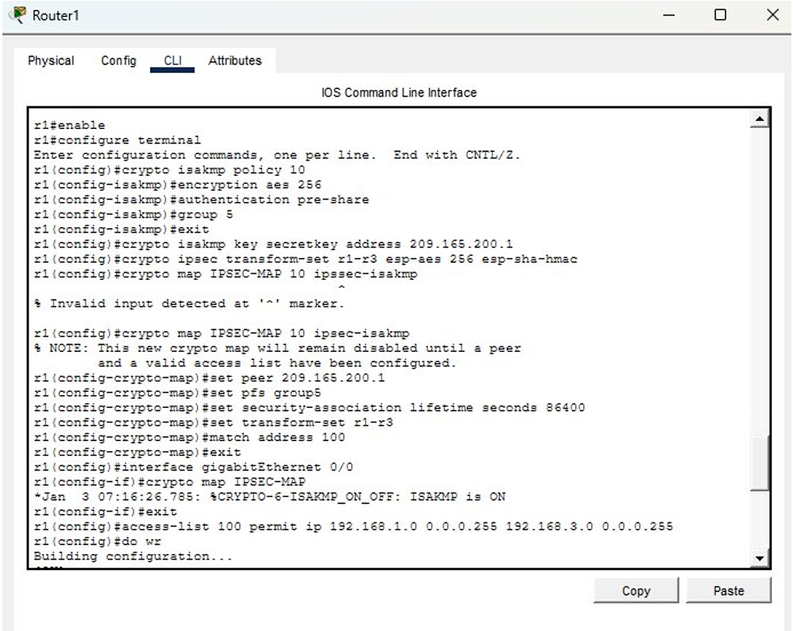
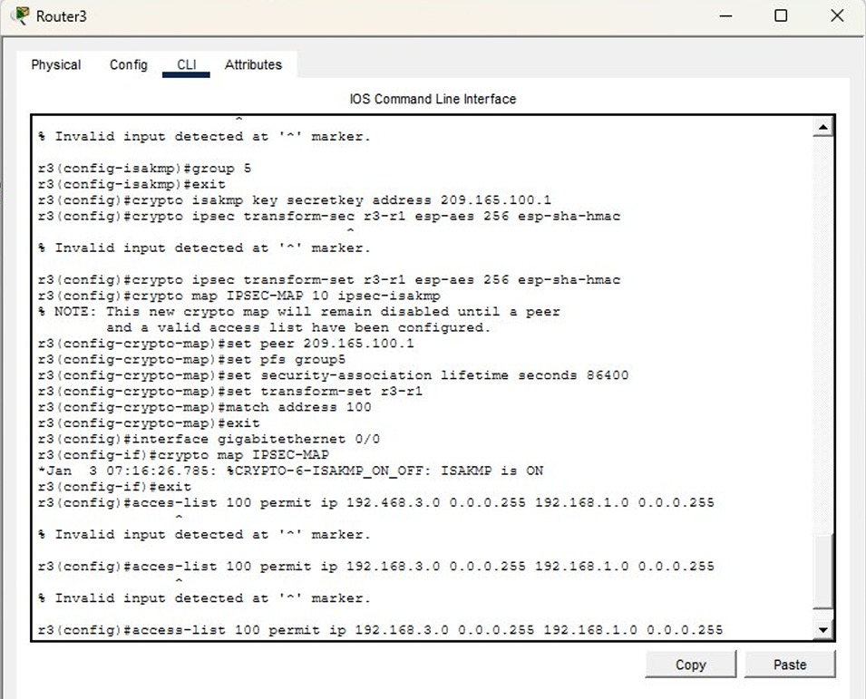
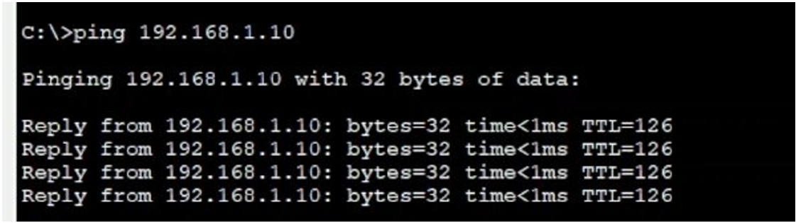

Crear la siguiente topología usando PacketTracer y configurar una VPN, implementando un protocolo IPsec.

Crear la topología de esta forma y empezar a construir la VPN con el protocolo IPsec desde la línea de comandos de los routers en PacketTracer.
La seguridad de la información que viaja a través de infraestructuras públicas, como Internet, se ha convertido en una prioridad. La necesidad de conectar sedes remotas, trabajos de manera remota, etc., se buscó una manera segura que ha impulsado la adopción de tecnologías de Red Privada Virtual (VPN). Entre los protocolos más robustos y ampliamente implementados para este fin se encuentra IPsec (Internet Protocol Security), un conjunto de estándares abiertos que garantiza la confidencialidad, integridad y autenticidad de los datos en la capa de red.
El propósito fundamental de esta topología es ilustrar el proceso de aseguramiento de las comunicaciones IP a través de un medio inseguro.
Primero armamos la topología de red, conectando los PCs cada una a un switch, a cada uno se conecta su respectivo router y para terminar las ramas, cada router se conecta a un router más cerrando la conexión, tal y como se muestra en la imagen.


Estos comandos configuran lo básico para que R1 pueda funcionar en la red, le asignan una identidad, activan sus dos interfaces físicas y le indican una ruta por defecto para que sepa que todo el tráfico que no pertenezca a su red local lo debe enviar a través de su interfaz pública hacia R3.

Como ya se mencionó anteriormente, el router de R3 se prepara para que tenga su red local del lado derecho, con el PC1 conectado a través del switch, y su salida hacia el otro router. La IP 192.168.3.1 es la puerta de enlace que usaría el PC1, y la 209.165.200.1 es la dirección pública de R3. La ruta por defecto hacia 209.165.200.2 hace que R3 sepa que debe enviar todo el tráfico desconocido (como el que viene del PC1 hacia el PC0) hacia el otro extremo, que sería el R1.

El ISP simula el medio público por donde viaja la VPN. El ISP tiene dos interfaces, una hacia el router R1 y otra hacia el router R3. Como no tiene rutas específicas ni configuraciones especiales, su función es solo reenviar paquetes, actuando como un router simple que conecta ambos extremos.

La política IKE establece los parámetros para negociar el túnel de forma segura; se usa AES 256 para cifrar, autenticación con clave compartida. Después se define la clave compartida secretkey y especifica que el peer es la IP pública de R3 (209.165.200.1). Luego se crea un transform-set que define cómo se va a cifrar el tráfico ya dentro del túnel. Después se arma un crypto map que une todo, indica cuál es el peer, que use PFS, el transform-set, y se vincula con una access-list. Esa access-list 100 justamente define qué tráfico va cifrado: en este caso, el que va desde PC0 hacia la red de PC1. Por último se aplica el crypto map a la interfaz de salida g0/0.

Para este caso se realizaron los mismos comandos pero en lugar de que el tráfico fuera de R1→R3 se fue de R3→R1; la configuración fue la misma.

Podemos observar que se está realizando un ping desde la PC1 a la PC0, lo que nos dice que se estableció de manera correcta la conexión.
La topología implementada demuestra el establecimiento de una VPN sitio a sitio con IPsec, donde los routers R1 y R3, actuando como gateways de seguridad, crean un túnel cifrado a través del router ISP que simula una red pública. Gracias a la configuración de políticas IKE, transform-sets y crypto mapas, se logra que el tráfico entre las redes locales viaje de manera confidencial, íntegra y autenticada, permitiendo que los equipos PC0 y PC1 se comuniquen de forma transparente como si estuvieran en la misma red física, pero con la seguridad de que los datos están protegidos en su travesía por el medio no confiable.
Telecom Tips. (2025, 29 mayo). Cómo configurar VPN IPsec Site-to-Site en Packet Tracer | Guía Paso a Paso [Vídeo]. YouTube. https://www.youtube.com/watch?v=RZ4RreDjhhk